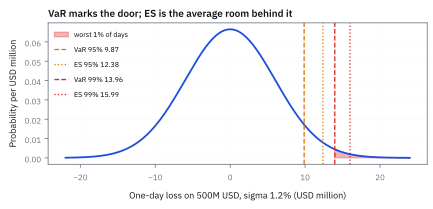
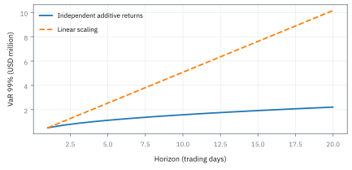
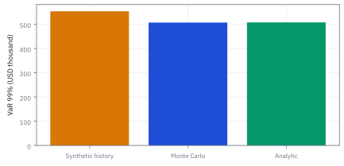
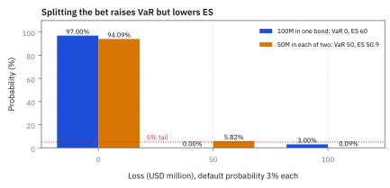

17.1 Value at Risk and Expected Shortfall
VaR บอกว่าวันร้ายเริ่มที่ขาดทุนเท่าไร Expected Shortfall บอกว่าเมื่อวันร้ายมาถึงจะเสียเฉลี่ยเท่าไร และตัวหลังคือตัวที่ขยับมากเมื่อหางของตลาดหนา
พอร์ต \$500 ล้านมีความผันผวนรายวัน 1.2% และสมมติค่าเฉลี่ยเป็นศูนย์ ฝ่ายความเสี่ยงรายงาน VaR 99% หนึ่งวัน \$13.96 ล้าน เทรดเดอร์คิดว่านี่คือขาดทุนสูงสุดแล้ว แต่จริงหรือ? เราจะหาว่า 1% ของวันที่ขาดทุนมากที่สุดเสียเฉลี่ยเท่าไร แล้วเปรียบเทียบ Normal กับ Student-t ที่มีความผันผวนเท่ากัน
ลองตอบก่อนเปิดเฉลย
ภายใต้ Normal จุดตัด VaR คือ \$13.96 ล้าน ส่วนค่าเฉลี่ยในหาง 1% หรือ ES คือ \$15.99 ล้าน ภายใต้ Student-t 4 degrees of freedom จุดตัดเปลี่ยนเป็น \$15.90 ล้าน และค่าเฉลี่ยของหาง 1% ของแบบจำลองนั้นเป็น \$22.15 ล้าน แต่ละค่า ES ใช้หางของตัวเอง ไม่ใช่ใช้จุดตัดเดียวกัน
ES แบบ t สูงกว่า VaR แบบ Normal \$8.19 ล้าน และสูงกว่า ES แบบ Normal \$6.16 ล้าน ตัวเลขเหล่านี้แสดงผลของการเลือกการแจกแจง ไม่ใช่เงินสำรองที่รับรองว่าจะพอทุกวัน เพราะ ES ก็เป็นค่าเฉลี่ย ไม่ใช่ขาดทุนสูงสุด
สิ่งที่เราจะสร้าง
1.9 ขั้นที่ 5 และ 16.4 ขั้นที่ 7 คิด VaR 99% ด้วย $z\sigma V$ แล้ว ตัวเลขนั้นบอกว่าหางเริ่มตรงไหน แต่ไม่บอกว่าในหางลึกแค่ไหน หน้านี้สร้างตัววัดตัวที่สอง คือ Expected Shortfall (ES) และดูว่าเมื่อไรสองตัวนี้เล่าเรื่องต่างกัน
เริ่มจากนับขาดทุน 100 วันด้วยมือ แล้วเขียนนิยามที่ใช้ได้ทั้งกับข้อมูลและกับสูตร คิด VaR และ ES ของพอร์ต \$500 ล้านใต้ Normal ขยายเป็น 10 วัน นับจากข้อมูลจริง 60 เดือน เปลี่ยนหางเป็น Student-t ลองรูปทรงที่ variance ใกล้กันแต่หางต่างกัน และจบที่ตัวอย่างซึ่ง VaR ลงโทษการกระจายความเสี่ยง
ศัพท์ที่ใช้ในหัวข้อนี้
- Value at Risk (VaR)
- ขาดทุนที่เป็นเส้นแบ่ง: ในสัดส่วน $c$ ของวัน ขาดทุนไม่เกินเส้นนี้ ใช้ตั้งเพดานความเสี่ยงของแต่ละ desk เพราะเป็นตัวเลขเดียวหน่วยเงินที่เทียบข้ามสินทรัพย์ได้
- Expected Shortfall (ES)
- ค่าเฉลี่ยของขาดทุนในส่วน $1-c$ ที่แย่ที่สุด ตอบคำถามที่ VaR ไม่ตอบ: เมื่อวันร้ายมาถึงจะเสียเท่าไร สไลด์ของคอร์สเรียกตัวเดียวกันว่า CVaR (Conditional VaR)
- Quantile
- จุดตัดที่มีสัดส่วนที่กำหนดของข้อมูลหรือของโอกาสอยู่ต่ำกว่าหรือเท่า เช่น quantile 0.99 ของขาดทุน ใช้หาขอบของหาง
- Historical simulation
- การเอาผลตอบแทนที่เกิดจริงในข้อมูลย้อนหลังมาเรียงแล้วนับ แทนการสมมติรูปทรง ตรวจได้ง่าย แต่หางมีข้อมูลเพียงไม่กี่ตัว
- Student-t distribution
- รูปทรงคล้ายระฆังแต่หางหนากว่า ยิ่ง degrees of freedom น้อยหางยิ่งหนา ใช้แทนตลาดที่วันร้ายมาบ่อยกว่าที่ Normal ทำนาย (1.11, 10.4)
- Subadditivity
- กติกาว่าความเสี่ยงของสองสถานะรวมกันต้องไม่เกินผลบวกของความเสี่ยงแยกกัน ตัววัดที่ไม่ผ่านกติกานี้จะลงโทษการกระจายความเสี่ยง ES ผ่าน VaR ไม่ผ่าน
สัญลักษณ์และหน่วย
| สัญลักษณ์ | ความหมาย | หน่วย |
|---|---|---|
| $V$ | มูลค่าพอร์ตวันนี้ ใช้แปลงผลตอบแทนเป็นเงิน | \$ |
| $R$ | ผลตอบแทนหนึ่งช่วง | สัดส่วน |
| $L$ | ขาดทุน นับเป็นบวกเมื่อเสีย $L=-VR$ | \$ หรือ % |
| $\mu$ | ค่าเฉลี่ยของ $R$ | สัดส่วนต่อวัน |
| $\sigma$ | ความผันผวนของ $R$ | สัดส่วนต่อวัน |
| $c$ | ระดับความเชื่อมั่น เช่น 0.99 | ไม่มีหน่วย |
| $z_c$ | จุดบนระฆังมาตรฐานที่ $\Phi(z_c)=c$ | ไม่มีหน่วย |
| $\Phi$ | พื้นที่สะสมใต้ระฆังมาตรฐาน | ไม่มีหน่วย |
| $\varphi$ | ความสูงของระฆังมาตรฐาน (density) | ต่อหน่วยของ $z$ |
| $Q_L(u)$ | ขาดทุนที่มีสัดส่วน $u$ ของวันอยู่ต่ำกว่าหรือเท่า | \$ หรือ % |
| $L_{(k)}$ | ขาดทุนตัวที่ $k$ เมื่อเรียงจากน้อยไปมาก | \$ หรือ % |
| $N$ | จำนวนข้อมูล | วัน หรือ เดือน |
| $K$ | อันดับที่หยิบเป็น VaR | อันดับ |
| $h$ | จำนวนวันที่ถือ | วันทำการ |
ขั้นที่ 1 — ลองด้วยมือ: ขาดทุน 100 วัน เรียงแล้วนับ
ก่อนมีสูตร ลองกับข้อมูลที่นับได้ desk หนึ่งมีขาดทุน 100 วัน (ตัวเลขสมมติ หน่วยพันดอลลาร์) เรียงจากมากไปน้อย หกวันที่แย่ที่สุดคือ 620, 540, 410, 380, 350 และ 330 อีก 94 วันเสียน้อยกว่า 330 หรือได้กำไร คำถามสองข้อ: วันร้ายเริ่มที่ไหน และข้างในเฉลี่ยลึกเท่าไร
ระดับ 99% ถามว่าขาดทุนเส้นไหนที่ 99 วันจาก 100 ไม่แย่กว่า วันที่แย่ที่สุด 620 มีวันเดียว ส่วนวันที่สอง 540 มี 99 วันที่เสียไม่เกินมัน 540 จึงเป็น VaR ES ถามต่อว่าหนึ่งวันที่เลยเส้นไปเสียเฉลี่ยเท่าไร คำตอบคือ 620
ระดับ 95% หางคือห้าวัน VaR จึงเป็นวันที่หก 330 และ ES เฉลี่ยห้าวันแย่สุดได้ 460 แต่ในห้าวันนั้นยังมีวันที่เสีย 620 จึงเห็นชัดว่า ES ไม่ใช่ขาดทุนสูงสุด
ES ไม่ต่ำกว่า VaR เพราะเฉลี่ยขาดทุนในส่วนหางที่มีค่าไม่น้อยกว่าจุดตัด เมื่อข้อมูลซ้ำกันหรือหางไม่เต็มจำนวนวัน อาจต้องรวมบางส่วนที่เท่ากับจุดตัดด้วย ขั้นที่ 2 จะแสดงวิธีนับกรณีเหล่านี้
ขั้นที่ 2 — นิยามที่ใช้ได้ทั้งกับข้อมูลและกับสูตร
ขั้นที่ 1 นับง่ายเพราะ 100 วันแบ่งหาง 1% และ 5% ได้ลงตัว ถ้ามี 250 วัน หาง 1% คือ 2.5 วัน จะหยิบวันไหน? ต้องมีนิยามที่ไม่ขึ้นกับการหารลงตัว ให้ $Q_L(u)$ คือขาดทุนที่มีสัดส่วน $u$ ของวันอยู่ต่ำกว่าหรือเท่า สองบรรทัดแรกข้างล่างเป็นนิยาม ที่เหลือคือการใช้กับข้อมูล $N$ วัน
VaR คือขาดทุนที่เล็กที่สุดที่ทำให้ $P(L\le\ell)\ge c$ ส่วน ES เฉลี่ยจุดตัดทุกจุดที่ลึกกว่า $c$ ตัวหาร $1-c$ คือความยาวของช่วงที่เฉลี่ย ES จึงเฉลี่ยหางที่กว้าง $1-c$ พอดีเสมอ ไม่มากไม่น้อย
กับข้อมูล $N$ วัน แต่ละวันมีน้ำหนัก $1/N$ ฟังก์ชัน $Q_L$ จึงเป็นขั้นบันได ขั้นที่ $k$ กว้าง $1/N$ VaR คือขั้นที่ $K=\lceil cN\rceil$ (ปัดขึ้น) ที่ $c=0.99,\ N=100$ ได้ $K=99$ คือ 540 และช่วง 0.99 ถึง 1 มีแต่ขั้นของ 620 ES จึงเป็น 620 ตรงกับการนับ
ทำไมไม่นิยาม ES ว่า “ค่าเฉลี่ยของวันที่เสียตั้งแต่ VaR ขึ้นไป” ให้ง่าย? เพราะวันที่เท่ากับ VaR พอดีถูกนับเข้ามาด้วย ที่ 99% จะได้ $(620+540)/2=580$ ซึ่งเฉลี่ย 2% ของวัน ไม่ใช่ 1%
นิยามแบบ integral ไม่มีปัญหานี้ ถ้าหางมีเศษ เช่น 2.5 วัน วันขอบก็นับครึ่งเดียว (โจทย์ข้อ 2) กับ distribution แบบต่อเนื่อง สองแบบให้ค่าเท่ากัน
ขั้นที่ 3 — จากผลตอบแทนเป็นขาดทุน: VaR ของพอร์ต \$500 ล้าน
ตอนนี้แทนการนับด้วยแบบจำลอง สมมติว่าผลตอบแทนหนึ่งวัน $R$ เป็น Normal ค่าเฉลี่ย $\mu$ ความผันผวน $\sigma$ ขาดทุนเป็นบวกเมื่อเสีย จึงกลับเครื่องหมายแล้วคูณมูลค่าพอร์ต จุดที่ต้องระวังมีจุดเดียว: การกลับเครื่องหมายพลิกอสมการ
ขาดทุนไม่เกิน $\ell$ แปลว่าผลตอบแทนไม่ต่ำกว่า $-\ell/V$ บรรทัดที่สามใช้ความสมมาตรของระฆัง: โอกาสที่ $R$ อยู่เหนือจุดซึ่งต่ำกว่าค่าเฉลี่ย $z_c$ เท่าของ $\sigma$ เท่ากับ $\Phi(z_c)$ เทียบสองบรรทัดแล้วย้ายข้าง ได้ VaR เป็นความผันผวนคูณระยะมาตรฐาน หักด้วยกำไรที่คาดไว้
ตัวอย่างนี้ตั้งค่าเฉลี่ยรายวันเป็นศูนย์เพื่อให้เห็นผลของความผันผวน หากเฉลี่ยปีละ 10% แล้วประมาณรายวันด้วย $0.10/252\approx0.04\%$ จะเล็กกว่า $\sigma$ ราว 30 เท่า แต่เป็นเหตุให้พิจารณาประมาณ ไม่ใช่กฎว่าตัดค่าเฉลี่ยทิ้งได้เสมอ โดยเฉพาะเมื่อช่วงเวลายาวขึ้น
$z_c$ หาจากตารางย้อนกลับ $\Phi(z)=c$ แบบ 1.9 ตัวคูณแสดง 7 ทศนิยม แต่ผลคูณใช้ค่าก่อนปัด
VaR 99% คือ 2.79% ของพอร์ต VaR เป็นเส้นตรงตาม $V$ และ $\sigma$ ลดพอร์ตครึ่งหนึ่ง VaR ลดครึ่งหนึ่งพอดี คุณสมบัตินี้ทำให้ใช้ตั้งเพดานของแต่ละ desk ได้ง่าย และ 16.4 ใช้มันคำนวณว่าต้องลดพอร์ตเท่าไรเมื่อความผันผวนขึ้น
ขั้นที่ 4 — ES ของพอร์ต: เฉลี่ยทุกอย่างที่อยู่หลังจุดตัด
VaR บอกว่าหางเริ่มตรงไหน ES ต้องเฉลี่ยทุกอย่างในหาง จึงต้องหาค่าเฉลี่ยของ $Z$ มาตรฐานเมื่อรู้ว่า $Z\gt z_c$ ปกติการอินทิเกรตหางของระฆังทำด้วยมือไม่ได้ แต่ integral ที่ต้องการตรงนี้ทำได้ เพราะ derivative ของ $\varphi$ มีรูปพิเศษ
จังหวะที่ทำให้ทุกอย่างง่ายคือบรรทัดที่สอง: $z\varphi(z)$ เป็นค่าลบของ derivative ของ $\varphi$ integral ของหางจึงแค่ย้อน derivative ปลายอนันต์เป็นศูนย์เพราะระฆังลงถึงศูนย์ เหลือแค่ความสูงของระฆังที่จุดตัด หารด้วยพื้นที่หาง $1-c$ ก็เป็นค่าเฉลี่ย เพราะ ES ถามถึงวันที่รู้แล้วว่าอยู่ในหาง
ที่ 99% ระฆังสูงเหลือ 6.68% ของยอด ($e^{-2.7059}=0.0668$) ES 99% คือ \$15.99 ล้าน มากกว่า VaR \$2.03 ล้าน อัตราส่วน $2.6652/2.3263=1.146$ ที่ 95% ใช้ $\varphi(1.6448536)=0.10313564$ หารด้วย 0.05 ได้ \$12.38 ล้าน อัตราส่วน 1.254
ยิ่งลึกในหาง อัตราส่วน ES ต่อ VaR ยิ่งเข้าใกล้ 1 เพราะระฆังลดลงเร็วมากจนของในหางกองอยู่ใกล้ขอบ นี่คือลักษณะของหางบาง ขั้นที่ 7 จะแสดงว่าตลาดที่หางหนาไม่เป็นแบบนี้
Figure 17.1a — จุดตัดกับค่าเฉลี่ยหางของพอร์ต \$500 ล้าน

แกนนอนคือขาดทุนหนึ่งวันของพอร์ต \$500 ล้าน หน่วยล้านดอลลาร์ ตั้งแต่ −22 ถึง 24 (ค่าลบคือกำไร) เส้นโค้งคือ density ของ Normal ที่ความผันผวน \$6 ล้าน แกนตั้งคือโอกาสต่อหนึ่งล้านดอลลาร์ เส้นประส้มและแดงคือ VaR 95% และ 99% ที่ 9.87 และ 13.96 เส้นจุดคือ ES ที่ 12.38 และ 15.99 พื้นที่แดงคือ 1% ของวันที่แย่ที่สุด ES 99% คือจุดสมดุลของพื้นที่แดงนั้น ถ้าตัดมันเป็นแผ่นแล้ววางบนปลายนิ้ว
ขั้นที่ 5 — จาก 1 วันเป็น 10 วัน
กฎ Basel ชุดปี 1996 ถามความเสี่ยงสิบวัน เพราะการปิดสถานะก้อนใหญ่ใช้เวลา ถ้าผลตอบแทนรายวันอิสระกันและความผันผวนคงที่ variance ของผลรวมสิบวันคือผลบวกของ variance เพราะ covariance ข้ามวันเป็นศูนย์ (8.2)
สองบรรทัดกลางเป็นล้านดอลลาร์: สิบวัน VaR 99% คือ \$44.14 ล้าน และ ES \$50.57 ล้าน การคูณ $\sqrt{10}$ ทั้งก้อนใช้ได้เพราะตั้งค่าเฉลี่ยเป็นศูนย์ ถ้าไม่เป็นศูนย์ ค่าเฉลี่ยบวกกันเป็นเส้นตรง คูณ $h$ แต่ความผันผวนโตแบบราก คูณ $\sqrt h$ ตามบรรทัดสุดท้าย
การบวก variance ของวันอิสระที่มี variance เท่ากันทำให้ standard deviation โตเป็น $\sqrt h$ เท่า การคูณ VaR และ ES แบบเดียวกันในตัวอย่างนี้ยังอาศัยขาดทุนรวมเป็น Normal และค่าเฉลี่ยศูนย์ด้วย สำหรับ option ที่ผลขาดทุนไม่เป็นเส้นตรง ต้องคำนวณผลของการเปลี่ยนราคาให้ตรงกับสัญญา
หลังช็อกใหญ่แบบใน 16.4 ความผันผวนที่พยากรณ์แต่ละวันอาจไม่เท่ากัน จึงควรรวม variance ที่พยากรณ์ไว้และพิจารณาการแจกแจงของขาดทุนหลายวัน การใช้ค่าจากช่วงสงบอาจต่ำไป แต่การตรึงค่าที่สูงหลังช็อกไว้ทุกวันก็อาจสูงไปหากมันค่อย ๆ ลดลง ไม่มีกฎว่าคูณรากแล้วต้องต่ำไปเสมอ
Figure 17.1b — ความเสี่ยงโตตามรากของจำนวนวัน

แกนนอนคือจำนวนวันที่ถือ 1 ถึง 20 วันทำการ แกนตั้งเป็นล้านดอลลาร์ เส้นน้ำเงินคือ $13.958\sqrt h$ เส้นแดงคือ $15.993\sqrt h$ (รูปใช้ ES ที่ปัดต่างจาก 15.991 ของขั้นที่ 4 ไม่ถึง 0.02%) เส้นประเทาคือการคูณจำนวนวันตรง ๆ $13.958h$ ซึ่งผิด และพุ่งออกนอกกรอบบนที่ 110 ตั้งแต่ราววันที่ 8 จุดดำที่วันที่ 10 คือ 44.14 และ 50.57
ขั้นที่ 6 — นับจากข้อมูลจริง: 60 เดือนของไฟล์ Assignment 2
ไฟล์ Assignment 2 ของคอร์สมีผลตอบแทนรายเดือน 60 เดือนของสินทรัพย์สามตัว ถือเท่ากันตัวละหนึ่งในสาม แล้วถาม VaR และ ES 95% แบบ historical simulation คือใช้นิยามของขั้นที่ 2 ตรง ๆ โดยไม่สมมติรูปทรงเลย
เดือนแรกสามตัวให้ 2.1675, −1.8883 และ 3.0712% รวม 3.3504 พอร์ตได้กำไร ขาดทุนจึงติดลบ เดือนที่สามคือ −2.5194, 1.5773 และ −3.1840% พอร์ตเสีย 1.3754% คิดครบ 60 เดือนแล้ว ห้าเดือนที่เสียมากที่สุดคือ 2.3707, 2.1450, 1.9877, 1.9191 และ 1.8807%
$0.95\times60=57$ พอดี VaR คือตัวที่ 57 เมื่อเรียงจากน้อยไปมาก คือขาดทุนใหญ่อันดับสี่ 1.9191% หาง 5% คือ 3 เดือนเต็ม ES จึงเป็นค่าเฉลี่ยของสามเดือนที่เหลือ 2.1678% ทั้งหางมีข้อมูลแค่สามตัว เปลี่ยนเดือนเดียวตัวเลขก็ขยับมาก
สองบรรทัดล่างสมมติ Normal ด้วยค่าเฉลี่ยของขาดทุน $-5.8143/60=-0.096905\%$ และความผันผวน 1.147563% (หารด้วย 59 แบบ 8.1) ได้ VaR ต่ำกว่าการนับ (1.7907 เทียบ 1.9191) แต่ ES สูงกว่า (2.2702 เทียบ 2.1678) ตัวเลข 2.0627128 คือ $\varphi(z_{0.95})/0.05$ จากขั้นที่ 4
Figure 17.1c — 60 เดือนของ Assignment 2 กับหาง 5%

histogram ของขาดทุนรายเดือน 60 เดือนของพอร์ตถือเท่ากันสามตัว ช่องกว้าง 0.4 จุด จาก −3.2% ถึง 2.8% จุดสี่จุดคือสี่เดือนที่แย่ที่สุด จุดส้มคือเดือนที่ 57 ซึ่งเป็น VaR 95% 1.919% เส้นประแดงคือ ES 95% 2.168% เส้นจุดและเส้นประสลับจุดสีน้ำเงินคือ VaR 1.791% และ ES 2.270% ของ Normal ที่ fit กับข้อมูลชุดนี้
ขั้นที่ 7 — หางหนา: Student-t ที่ความผันผวนเท่าเดิม
ผลตอบแทนรายวันจริงมีวันร้ายบ่อยกว่าที่ระฆังทำนาย (10.4) กลับไปที่พอร์ต \$500 ล้าน แล้วเปลี่ยนรูปทรงเป็น Student-t 4 degrees of freedom ปรับขนาดให้ความผันผวนเป็น 1.2% เท่าเดิม คำถามคือ VaR กับ ES ขยับเท่ากันไหม density ในบรรทัดแรกเป็นของที่กำหนด (1.11)
t ที่ 4 degrees of freedom มี variance $4/(4-2)=2$ หารด้วย $\sqrt2$ จึงได้ความผันผวน 1 เหมือนระฆังมาตรฐาน $F$ ของ $\nu=4$ มีสูตรปิด (ลอง differentiate จะได้ $f$ คืนมา) แต่แก้ $F(q)=0.99$ ด้วยมือไม่ได้ จึงหา $q$ ด้วย bisection แล้วตรวจโดยแทนกลับ: $75.087/(2\times76.620)=0.49$ บวก 0.5 ได้ 0.99 พอดี
integral ของหางใช้ท่าเดียวกับขั้นที่ 4 คือหาสิ่งที่ differentiate แล้วได้ integrand ตั้ง $u=1+t^2/4$ จะได้ $du=\tfrac t2\,dt$ integrand กลายเป็น $\tfrac34u^{-5/2}\,du$ ซึ่ง integral คือ $-\tfrac12u^{-3/2}$ ที่ปลายอนันต์เป็นศูนย์ เหลือค่าที่ $q$ หารด้วย 0.01 และ $\sqrt2$ ก็เป็น ES
ในตัวอย่างระดับ 99% นี้ ความผันผวนเท่ากัน แต่ VaR เพิ่ม 13.9% และ ES เพิ่ม 38.5% อัตราส่วน ES ต่อ VaR เป็น 1.393 เทียบ 1.146 ของ Normal
ES ของ Normal ต่ำกว่า ES ของ t อยู่ \$6.16 ล้าน หรือ 27.8% ของ \$22.15 ล้าน นี่เป็นความต่างของค่าเฉลี่ยในหางตามแบบจำลองสองแบบ ไม่ใช่จำนวนเงินที่จะขาดแน่นอนในทุกวันร้าย
เอกสารของคอร์สมีตัวเลขอีกสองชุดของพอร์ตเดียวกัน: ผลตอบแทนจริง 1,000 วันให้ VaR 3.15% และ ES 3.92% ของพอร์ต (\$15.75 และ \$19.60 ล้าน) และการสุ่ม t แบบเดียวกันนี้ 100,000 เส้นทางให้ \$16.40 และ \$22.10 ล้าน ค่าแม่นตรงข้างบนคือ \$15.90 และ \$22.15 ล้าน หน้านี้ใช้ค่าแม่นตรง
กับ 1,000 วันที่ 99% หาง 1% คือ 10 วันเต็ม ES เฉลี่ย 10 วันแย่สุด แต่ตามขั้นที่ 2 VaR คือตัวที่ $\lceil0.99\times1{,}000\rceil=990$ คือแย่เป็นอันดับ 11 เอกสารของคอร์สใช้อันดับ 10 ซึ่งหลาย desk ก็ทำ จึงต้องระบุเสมอว่าใช้แบบไหน
Figure 17.1d — เปลี่ยนการแจกแจง แต่คงพอร์ตและความผันผวน
| แบบจำลอง | VaR 99% | ES 99% |
|---|---|---|
| Normal | 13.96 | 15.99 |
| Student-t 4 | 15.90 | 22.15 |
ทุกช่องเป็นล้านดอลลาร์ ทั้งสองแบบใช้พอร์ต \$500 ล้าน ค่าเฉลี่ยศูนย์ และ standard deviation ของขาดทุน \$6 ล้านต่อวัน ตัว t ถูกปรับสเกลให้มีความผันผวนเท่ากันแล้ว
อ่านข้ามแถว: ที่ระดับ 99% ในตัวอย่างนี้ จุดตัดขาดทุนเปลี่ยนจาก 13.96 เป็น 15.90 ล้าน แต่ค่าเฉลี่ยในหางเปลี่ยนจาก 15.99 เป็น 22.15 ล้าน ตารางใช้ค่าจากสูตรในบทเดียวกัน ไม่ปนกับผลสุ่มอีกชุด
ภาพอ้างอิงเดิม
เปิดกราฟเดิมที่รวมข้อมูลและผลจำลองคนละชุด เก็บไว้สำหรับอ้างอิง ตัวอย่างหลักใช้ค่าที่คำนวณในตารางด้านบน

ขั้นที่ 8 — variance เกือบเท่ากัน หางต่างกัน
ใช้พอร์ต \$500 ล้านเดิม แล้วสร้างการแจกแจงผสมจาก Normal สองกลุ่ม: กลุ่มแรกมีน้ำหนัก 75% และความผันผวน 0.76 เท่าของปกติ อีกกลุ่มมีน้ำหนัก 25% และความผันผวน 1.5 เท่า ทั้งสองกลุ่มมีค่าเฉลี่ยศูนย์ เราจะเทียบจุดตัดกับค่าเฉลี่ยหางที่ระดับ 95%
variance ของแบบผสมเป็น 0.9957 เท่าของ Normal ต่ำกว่าประมาณ 0.43% จึงใกล้กันแต่ไม่เท่ากัน VaR หาโดยแก้ $F(x)=0.95$ ด้วย bisection ตรวจจากค่าปัดเศษ: $0.75(0.981645)+0.25(0.855066)\approx0.95$
ES ใช้ท่าของขั้นที่ 4 ทีละก้อน: ตั้ง $z=y/s$ integral ของก้อนที่มีความผันผวน $s$ เท่ากับ $s\varphi(x/s)$ ก้อนสงบให้ $0.75(0.76)(0.0450117)=0.0256567$ ก้อนปั่นป่วนให้ $0.25(1.5)(0.2278529)=0.0854448$
เมื่อคำนวณส่วนต่างก่อนปัด VaR ของแบบผสมต่ำกว่า Normal \$343,426 (9.53 เทียบ 9.87 ล้าน) แต่ ES สูงกว่า \$955,904 (13.33 เทียบ 12.38 ล้าน) จุดตัดต่ำกว่าไม่ได้แปลว่าค่าเฉลี่ยในหางต้องต่ำกว่าด้วย
ในหาง 5% นี้ ประมาณ 72.5% มาจากกลุ่มที่ผันผวนสูง แม้กลุ่มนั้นมีน้ำหนักเพียง 25% ของการแจกแจงทั้งหมด จึงเป็นตัวอย่างว่าทำไมต้องดูเลยจุดตัด VaR เข้าไปในหาง
สำหรับ Normal ทั้ง VaR และ ES เขียนเป็นค่าเฉลี่ยของขาดทุนบวกค่าคงที่คูณ $\sigma$ ได้ ถ้าตรึงค่าเฉลี่ยไว้ การลดตัวใดก็เท่ากับลด $\sigma$ แต่ถ้าค่าเฉลี่ยต่างกัน ตัวคูณของสองเกณฑ์ไม่เท่ากัน จึงอาจเลือกน้ำหนักต่างกันได้แม้อยู่ในกรณี Normal
Figure 17.1e — VaR ต่ำลง แต่ ES สูงขึ้นได้
| แบบจำลอง | VaR 95% | ES 95% |
|---|---|---|
| Normal | 9.87 | 12.38 |
| Normal สองกลุ่มผสมกัน | 9.53 | 13.33 |
ทุกช่องเป็นล้านดอลลาร์ของตัวอย่างในขั้นที่ 8 แบบผสมมีค่าเฉลี่ยศูนย์เหมือน Normal และ variance ต่ำกว่าประมาณ 0.43% แต่จุดตัดกับค่าเฉลี่ยในหางเปลี่ยนคนละทิศ ตัวเลขสองตัวนี้จึงตอบคนละคำถาม
ภาพอ้างอิงเดิม
เปิดกราฟจากสไลด์เดิม เก็บเป็นเอกสารอ้างอิง ไม่ใช้แทนผลคำนวณของตัวอย่างด้านบน

ขั้นที่ 9 — ตัวอย่างค้าน: กระจายเงินแล้ว VaR กลับแย่ลง
โจทย์ให้อะไรมาบ้าง: พันธบัตรสองตัว โอกาสผิดนัดตัวละ 3% อิสระกัน ผิดนัดแล้วเสียเงินต้นทั้งหมด เทียบการถือตัวเดียว \$100 ล้าน ($L_1$) กับแบ่งถือตัวละ \$50 ล้าน ($L_2$) หน่วยในสูตรเป็นล้านดอลลาร์ ใช้นิยามของขั้นที่ 2 กับ distribution ที่มีไม่กี่ค่า
คำตอบ: VaR บอกว่าการแบ่งทำให้แย่ลง จาก 0 เป็น \$50 ล้าน แต่ ES บอกว่าดีขึ้น จาก \$60 ล้านเป็น \$50.9 ล้าน
ถือตัวเดียว โอกาสเสีย 3% น้อยกว่าหาง 5% จุดตัดจึงตกที่ยังไม่เสียอะไร VaR เป็นศูนย์ทั้งที่มีโอกาสเสีย \$100 ล้าน ES เห็นความเสียหายนั้น: หาง 5% มีกรณีเสีย 100 อยู่ 3% และกรณีไม่เสียอีก 2% เฉลี่ยได้ 60
แบ่งถือ โอกาสที่อย่างน้อยหนึ่งตัวผิดนัดเกิน 5% จุดตัดจึงกระโดดเป็น 50 แต่ VaR ของแต่ละตัว \$50 ล้านเป็นศูนย์ทั้งคู่ (โอกาส 3%) VaR ของพอร์ตรวมจึงเกินผลบวกของส่วนย่อย ละเมิด subadditivity การกระจายถูกลงโทษ
หาง 5% ของพอร์ตแบ่งมีกรณีผิดนัดทั้งคู่ 0.09% กับกรณีตัวเดียว 4.91% ที่เหลือ เฉลี่ยได้ 50.9 ไม่เกิน 30 บวก 30 ของสองส่วนย่อย (ตัวละ $0.03\times50/0.05=30$) เอกสารต้นฉบับของคอร์สพิมพ์ค่านี้เป็น 59.1 แต่คิดตามนิยามได้ 50.9
ตัวอย่างนี้ยังแสดงเหตุผลของขั้นที่ 2: ถ้าเฉลี่ยทุกกรณีที่เสียตั้งแต่ VaR ขึ้นไป จะเฉลี่ยพื้นที่ 5.91% ได้ $(0.09+2.91)/0.0591=50.76$ ไม่ใช่ 50.9
ตรวจเองใน 10 วินาที: $1-0.97\times0.97=0.0591$ มากกว่า 0.05 จุดตัดจึงอยู่ที่ 50 และ $0.0009+0.0491=0.05$ คือหางที่ ES เฉลี่ยพอดี
Figure 17.1f — แบ่งเงินแล้ว VaR ขึ้น แต่ ES ลง

แกนนอนคือขาดทุน 0, 50 และ 100 ล้านดอลลาร์ แกนตั้งคือโอกาสเป็นเปอร์เซ็นต์ แท่งน้ำเงินคือถือตัวเดียว (97%, 0%, 3%) แท่งส้มคือแบ่งถือ (94.09%, 5.82%, 0.09%) เส้นจุดแดงคือระดับ 5% แท่งส้มที่ 50 ล้านสูงกว่าเส้น จุดตัด 95% จึงกระโดดจาก 0 เป็น 50
คำถามที่ควรถามออกมาดัง ๆ
ทำไมไม่ใช้ variance ต่อ? variance นับวันที่กำไรมากเท่ากับวันที่ขาดทุนมาก และมองไม่เห็นรูปทรงของหาง ขั้นที่ 8 มีสองตลาดที่ variance ต่างกันแค่ 0.43% แต่ ES 95% ต่างกัน \$955,904
ถ้า ES ดีกว่า ทำไมยังรายงาน VaR? VaR ขึ้นกับอันดับ ไม่ขึ้นกับขนาดของวันที่สุดโต่งที่สุด จึงประมาณจากข้อมูลได้นิ่งกว่า และตรวจย้อนหลังง่าย แค่นับวันที่ขาดทุนเกิน VaR (17.7) ส่วน ES เฉลี่ยหางที่มีข้อมูลน้อย เช่น 3 เดือนในขั้นที่ 6
ES 97.5% เทียบกับ VaR 99% อย่างไร? ภายใต้ Normal ของโจทย์ ES 97.5% คือ $\varphi(1.959964)/0.025\approx2.3378$ เท่าของ $\sigma V$ หรือ \$14.03 ล้าน ใกล้ VaR 99% \$13.96 ล้าน โดยสูงกว่าประมาณ 0.49%
แต่สำหรับ t ในขั้นที่ 7 ใช้ $q=2.776445$ แล้วได้ ES 97.5% \$16.94 ล้าน สูงกว่า VaR 99% ของ t เอง (\$15.90 ล้าน) การเทียบนี้อธิบายความต่างของตัววัด ไม่ใช่ข้อสรุปว่าเงินกองทุนรวมจะเปลี่ยนเท่านี้ เพราะกรอบกำกับดูแลมีองค์ประกอบอื่นด้วย
ความผิดที่ให้คำตอบผิดแบบเงียบ ๆ
อ่าน VaR เป็นขาดทุนสูงสุด: กลยุทธ์ที่ได้วันละ 0.1% แต่มีโอกาส 0.5% ต่อวันที่จะเสีย 20% โอกาสเสีย 0.5% น้อยกว่าหาง 1% VaR 99% จึงเป็น −0.1% คือกำไร ดูปลอดภัยสุด ๆ แต่ ES 99% คือ $(0.005\times20+0.005\times(-0.1))/0.01=9.95\%$ ต่อวัน ใครถูกวัดด้วย VaR อย่างเดียวจะถูกดึงไปหากลยุทธ์ที่ซ่อนความเสี่ยงไว้หลังจุดตัดแบบนี้
ใช้ 1.96 กับ VaR 95%: 1.96 คือจุดตัดของช่วง 95% แบบสองด้าน ซึ่งเหลือหางข้างละ 2.5% VaR สนใจหางเดียว ใช้ 1.96 จะได้ \$11.76 ล้าน แทน \$9.87 ล้าน สูงไป 19%
สูตร CVaR ในสไลด์: สไลด์บวกตัวที่ 57 ถึง 60 ซึ่งมีสี่ตัว แต่หารด้วยสาม ได้ 2.8075% แทน 2.1678% สูงไป 29.5% เมื่อข้อมูลเป็นพันตัวความต่างนี้เล็ก แต่ที่ 60 ตัวมันใหญ่กว่าความต่างระหว่างการนับกับ Normal
คูณ $\sqrt{10}$ ในช่วงที่ความผันผวนเกาะกลุ่ม: หลังวันร่วง GARCH ของ 16.4 พยากรณ์ว่าวันถัด ๆ ไปแรงกว่าปกติ ความผันผวนสิบวันจึงมากกว่า $\sqrt{10}$ เท่าของค่าเฉลี่ยระยะยาว ต้องรวม variance ที่พยากรณ์ของแต่ละวันแทน
ใช้ทำอะไรบนโต๊ะจริง
VaR ใช้ประกอบการตั้งเพดานความเสี่ยงและตรวจย้อนหลังว่าขาดทุนเกินค่าที่พยากรณ์บ่อยแค่ไหน (17.7) ส่วนกรอบ FRTB ใช้ ES 97.5% ในส่วนวิธีแบบจำลองภายในสำหรับความเสี่ยงตลาด ไม่ใช่กฎว่าเงินกองทุนทุกส่วนเท่ากับ ES ตัวเดียว
สำหรับพอร์ตที่มี option อาจใช้ Monte Carlo (17.5) สร้างสถานการณ์และคำนวณผลขาดทุนของสัญญาในแต่ละสถานการณ์ แล้วใช้นิยามอันดับและค่าเฉลี่ยหางของขั้นที่ 2 กับผลเหล่านั้น
สามโจทย์ตรวจความเข้าใจ
1. พอร์ต \$80 ล้าน ความผันผวนรายวัน 2% ค่าเฉลี่ยศูนย์ ผลตอบแทนเป็น Normal หา VaR 99% และ ES 97.5% หนึ่งวัน
เฉลย
$\sigma V=0.02(80{,}000{,}000)=1{,}600{,}000$ VaR 99% คือ $2.3263479(1{,}600{,}000)=\$3{,}722{,}157$ ES 97.5% คือ $2.3378028(1{,}600{,}000)=\$3{,}740{,}484$ มากกว่ากันแค่ 0.49% ภายใต้ค่าเฉลี่ยศูนย์ของตัวอย่างนี้ อัตราส่วนของสองตัววัดไม่เปลี่ยนเมื่อขยายขนาดพอร์ต
2. ข้อมูล 250 วัน ขาดทุนสี่วันที่มากที่สุดคือ 5.2, 4.1, 3.6 และ 3.0 ล้านดอลลาร์ หา VaR 99% และ ES 99% ตามนิยามของขั้นที่ 2
เฉลย
$0.99\times250=247.5$ ปัดขึ้นเป็น $K=248$ คืออันดับสามจากบน VaR คือ \$3.6 ล้าน หาง 1% คือ 2.5 วัน: สองวันแรกเต็ม และวันที่ 248 ครึ่งเดียว ES $=(5.2+4.1+0.5\times3.6)/2.5=11.1/2.5=\$4.44$ ล้าน ถ้าเฉลี่ยสองวันจะได้ 4.65 ถ้าเฉลี่ยสามวันได้ 4.30 ทั้งคู่ไม่ใช่หาง 1%
3. พันธบัตรแบบขั้นที่ 9 แต่โอกาสผิดนัดตัวละ 4% หา VaR และ ES 95% ของการถือตัวเดียว \$100 ล้าน และของการแบ่งตัวละ \$50 ล้าน
เฉลย
ตัวเดียว: 4% น้อยกว่า 5% VaR คือ 0 ES คือ $0.04(100)/0.05=80$ แบ่งถือ: $1-0.96^2=7.84\%$ เกิน 5% VaR คือ 50 ES คือ $(0.0016(100)+0.0484(50))/0.05=(0.16+2.42)/0.05=51.6$ VaR แย่ลงจาก 0 เป็น 50 แต่ ES ดีขึ้นจาก 80 เป็น 51.6
คำนวณซ้ำด้วย JavaScript
โค้ดนี้หา $z_c$ ด้วย bisection บนพื้นที่ใต้ระฆัง คิด VaR และ ES ของ Normal ใช้นิยามของขั้นที่ 2 กับข้อมูลย้อนหลังและกับ distribution ที่มีไม่กี่ค่า คิด Student-t 4 degrees of freedom และแบบผสม แล้วพิมพ์ตัวเลขหลักของหน้าออกมาหนึ่งบรรทัด
function num(name, x) {
if (typeof x !== 'number' || !Number.isFinite(x)) throw new TypeError(`${name} must be a finite number`);
return x;
}
function level(c) {
if (!(num('c', c) > 0.5 && c < 1)) throw new RangeError('c must be between 0.5 and 1');
return c;
}
// Standard Normal: erf from its power series (small x) or a continued fraction (large x).
function erf(x) {
const t = Math.abs(x);
if (t < 2.5) {
let sum = 0, term = t;
for (let k = 0; k < 200; k++) {
const add = term / (2 * k + 1);
sum += add;
if (Math.abs(add) < 1e-17 * sum) break;
term *= -t * t / (k + 1);
}
return Math.sign(x) * 2 / Math.sqrt(Math.PI) * sum;
}
let f = t;
for (let k = 120; k >= 1; k--) f = t + (k / 2) / f;
return Math.sign(x) * (1 - Math.exp(-t * t) / Math.sqrt(Math.PI) / f);
}
const Phi = z => 0.5 * (1 + erf(z / Math.SQRT2));
const phi = z => Math.exp(-z * z / 2) / Math.sqrt(2 * Math.PI);
// Solve F(x) = p for an increasing F by bisection.
function solve(F, p, lo, hi) {
for (let i = 0; i < 200; i++) {
const mid = (lo + hi) / 2;
if (F(mid) < p) lo = mid; else hi = mid;
}
return (lo + hi) / 2;
}
const zOf = c => solve(Phi, level(c), 0, 10);
// Loss L = -V R with R Normal(mu, sigma^2): VaR = V(sigma z - mu), ES = V(sigma phi(z)/(1-c) - mu).
function normalRisk(V, sigma, mu, c) {
if (!(num('V', V) > 0)) throw new RangeError('V must be positive');
if (!(num('sigma', sigma) > 0)) throw new RangeError('sigma must be positive');
const z = zOf(c);
return {z, VaR: V * (sigma * z - num('mu', mu)), ES: V * (sigma * phi(z) / (1 - c) - mu)};
}
// Historical: each loss weighs 1/N; ES averages exactly the worst (1 - c) share (a boundary day may count in part).
function historical(losses, c) {
if (!Array.isArray(losses) || losses.length < 2) throw new TypeError('losses must be an array of at least 2 numbers');
const s = losses.map((x, i) => num(`losses[${i}]`, x)).sort((a, b) => a - b);
const N = s.length, cN = level(c) * N, K = Math.ceil(cN - 1e-9);
let tail = 0;
for (let k = 1; k <= N; k++) tail += s[k - 1] * Math.min(1, Math.max(0, k - cN));
return {K, VaR: s[K - 1], ES: tail / (N - cN)};
}
// Discrete loss given as [loss, probability] pairs: VaR is the first loss whose cumulative probability reaches c.
function discreteRisk(outcomes, c) {
level(c);
const rows = outcomes.map(([x, p]) => [num('loss', x), num('probability', p)]).sort((a, b) => a[0] - b[0]);
if (rows.some(([, p]) => p < 0) || Math.abs(rows.reduce((a, [, p]) => a + p, 0) - 1) > 1e-12) throw new RangeError('probabilities must be non-negative and sum to 1');
let cum = 0, VaR = null, tail = 0;
for (const [x, p] of rows) {
const before = cum;
cum += p;
if (VaR === null && cum >= c - 1e-12) VaR = x;
tail += x * Math.max(0, cum - Math.max(before, c));
}
return {VaR, ES: tail / (1 - c)};
}
// Student-t with 4 degrees of freedom (variance 2), rescaled by 1/sqrt(2) to variance 1.
const t4Cdf = t => 0.5 + t * (t * t + 6) / (2 * (t * t + 4) ** 1.5);
function t4Risk(c) {
const q = solve(t4Cdf, level(c), 0, 1e4);
const tailIntegral = 0.5 * (1 + q * q / 4) ** -1.5; // integral of t f(t) from q to infinity
return {q, VaR: q / Math.SQRT2, ES: tailIntegral / (1 - c) / Math.SQRT2};
}
// Mixture of zero-mean Normals with weights w and scales s (in units of sigma).
function mixtureRisk(w, s, c) {
if (!Array.isArray(w) || !Array.isArray(s) || w.length !== s.length || !w.length) throw new TypeError('w and s must be arrays of the same length');
w.forEach((x, i) => { if (!(num('w', x) > 0 && num('s', s[i]) > 0)) throw new RangeError('weights and scales must be positive'); });
if (Math.abs(w.reduce((a, b) => a + b, 0) - 1) > 1e-12) throw new RangeError('weights must sum to 1');
const F = x => w.reduce((a, wi, i) => a + wi * Phi(x / s[i]), 0);
const q = solve(F, level(c), 0, 100);
const ES = w.reduce((a, wi, i) => a + wi * s[i] * phi(q / s[i]), 0) / (1 - c);
return {VaR: q, ES, variance: w.reduce((a, wi, i) => a + wi * s[i] * s[i], 0)};
}
const V = 500e6, sigma = 0.012;
const n99 = normalRisk(V, sigma, 0, 0.99), n95 = normalRisk(V, sigma, 0, 0.95), n975 = normalRisk(V, sigma, 0, 0.975);
const hand = [...Array(94).fill(0), 330, 350, 380, 410, 540, 620]; // 94 milder days: their values never enter
const months = [-1.1168, -1.3565, 1.3754, -1.0396, 0.5662, -0.005, -1.9092, 1.1039, -0.2332, -0.6678,
-1.3045, 0.8229, 0.9616, -0.9685, 1.0631, -2.8888, 0.6022, 1.1204, -0.9511, 0.081,
-0.8619, 0.0685, -0.2053, 0.9565, 0.1795, -2.4565, -0.0656, -0.1942, 0.3471, -0.2564,
1.2923, -0.3045, 0.4619, -1.8819, -1.1397, 1.9877, -0.096, 1.044, -0.2722, -0.0218,
0.814, 1.9191, 2.145, -0.3924, 0.8846, -2.0569, -0.8699, -0.4551, -0.5114, -0.0412,
0.2515, -0.6077, 1.8807, -0.2756, -1.2639, -1.4916, -0.9395, 2.3707, -0.2759, -0.736];
const m = historical(months, 0.95), sorted = [...months].sort((a, b) => a - b);
const mean = months.reduce((a, b) => a + b, 0) / 60;
const sd = Math.sqrt(months.reduce((a, b) => a + (b - mean) ** 2, 0) / 59);
const t99 = t4Risk(0.99), mix = mixtureRisk([0.75, 0.25], [0.76, 1.5], 0.95);
const sV = sigma * V;
console.log(JSON.stringify({
hand: {VaR99: historical(hand, 0.99).VaR, ES99: historical(hand, 0.99).ES, VaR95: historical(hand, 0.95).VaR, ES95: historical(hand, 0.95).ES,
atOrAbove99: (540 + 620) / 2},
z99: n99.z, z95: n95.z, VaR99: n99.VaR, VaR95: n95.VaR, ES99: n99.ES, ES95: n95.ES, ES975: n975.ES,
tenDay: {VaR: n99.VaR * Math.sqrt(10), ES: n99.ES * Math.sqrt(10)},
months: {K: m.K, VaR: m.VaR, ES: m.ES, slideES: (sorted[56] + sorted[57] + sorted[58] + sorted[59]) / 3,
mean, sd, fitVaR: mean + n95.z * sd, fitES: mean + phi(n95.z) / 0.05 * sd},
t4: {q: t99.q, VaR: t99.VaR * sV, ES: t99.ES * sV, gapToNormalES: t99.ES * sV - n99.ES},
mixture95: {variance: mix.variance, VaR: mix.VaR * sV, ES: mix.ES * sV},
oneBond: discreteRisk([[0, 0.97], [100, 0.03]], 0.95),
twoBonds: discreteRisk([[0, 0.97 ** 2], [50, 2 * 0.03 * 0.97], [100, 0.03 ** 2]], 0.95),
stuffed: discreteRisk([[-0.1, 0.995], [20, 0.005]], 0.99)
}));ที่มาที่ไป
ต้นทศวรรษ 1990 ประธานของ J.P. Morgan ขอรายงานหน้าเดียวทุกวันหลังตลาดปิด ว่าทั้งธนาคารเสี่ยงเท่าไรในวันพรุ่งนี้ ทีมความเสี่ยงแปลงทุกสถานะเป็นตัวเลขเดียวหน่วยเงิน คือ VaR และเปิดเผยวิธีคิดเป็นเอกสาร RiskMetrics ในปี 1994 ปี 1996 กฎ Basel ใช้ VaR 99% สิบวันคิดเงินกองทุนของความเสี่ยงตลาด
ปี 1999 Artzner, Delbaen, Eber และ Heath เขียนกติกาของตัววัดความเสี่ยงที่ดี (coherent risk measure) ซึ่ง VaR ไม่ผ่านข้อ subadditivity ปี 2000 Rockafellar และ Uryasev แสดงวิธีเลือกพอร์ตด้วย ES ซึ่งเขียนเป็น linear program ได้เมื่อใช้ผลขาดทุนเชิงเส้นของน้ำหนักในชุดสถานการณ์จำกัด ส่วนมาตรฐาน FRTB ที่ประกาศในปี 2016 ใช้ ES 97.5% ในวิธีแบบจำลองภายใน การประกาศมาตรฐานไม่ใช่วันที่ทุกประเทศนำไปใช้พร้อมกัน
ข้อจำกัด: วิธีนี้สมมติอะไร และของจริงเป็นอย่างไร
| สมมติอะไร | ของจริง | ผลเวลาใช้งาน |
|---|---|---|
| ผลตอบแทนเป็น Normal | หางหนากว่า วันร้ายมาบ่อยกว่า | ES จาก Normal ต่ำไป 27.8% ในขั้นที่ 7 ทั้งที่ความผันผวนถูก |
| แต่ละวันอิสระ ความผันผวนคงที่ | วันแรงเกาะกลุ่มกัน (16.4) | กฎ $\sqrt{10}$ ต่ำไปในช่วงวิกฤต |
| ข้อมูลย้อนหลังแทนอนาคตได้ | หางมีข้อมูลไม่กี่ตัว และวิกฤตใหม่ไม่เหมือนเก่า | ES จาก 60 เดือนใช้แค่ 3 ตัว ต้องมี stress test เสริม |
| พอร์ตเป็นเส้นตรงตามราคา | option ขาดทุนไม่เป็นเส้นตรง | ต้องใช้ Monte Carlo (17.5) แทนสูตร $z\sigma V$ |
สิ่งที่ควรตอบได้หลังอ่าน
- VaR คือจุดเริ่มของหาง ES คือค่าเฉลี่ยของหางที่กว้าง $1-c$ พอดี: 100 วันให้ 540 กับ 620 ที่ 99%
- พอร์ต \$500 ล้านที่ความผันผวน 1.2% ต่อวัน: VaR 99% \$13.96 ล้าน ES \$15.99 ล้าน สิบวัน \$44.14 และ \$50.57 ล้าน
- ES ของ Normal ได้มาจาก $\varphi'(z)=-z\varphi(z)$ และของ t ได้มาจากการแทน $u=1+t^2/4$
- ความผันผวนเท่ากันแต่หางหนา VaR ขึ้น 13.9% แต่ ES ขึ้น 38.5% (\$22.15 ล้าน) และแบบผสมทำให้ VaR ลดลงขณะที่ ES เพิ่มขึ้น
- VaR ลงโทษการกระจายได้ (0 เป็น 50) และถูกหลบได้ด้วยการซ่อนความเสี่ยงหลังจุดตัด ES ไม่มีปัญหานี้ แต่ประมาณยากกว่า
17.2 เปลี่ยนคำถามจากว่าจะเสียเท่าไร เป็นว่าควรเสี่ยงเท่าไร: ขนาดเดิมพันที่ทำให้ทุนโตเร็วที่สุดในระยะยาว (Kelly) และเหตุที่คนใช้จริงมักลงแค่ครึ่งหนึ่งของขนาดนั้น